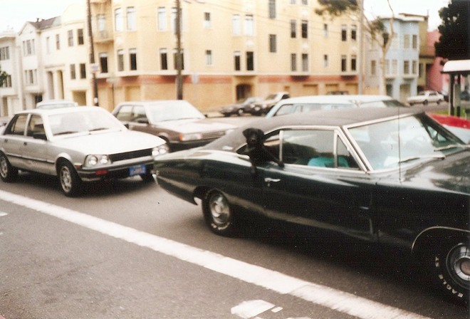
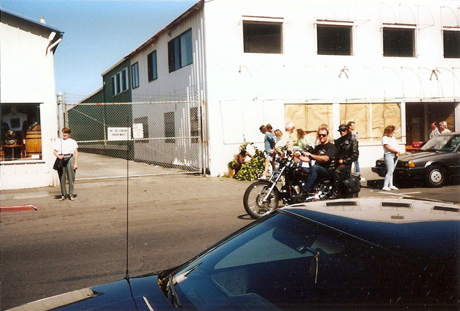
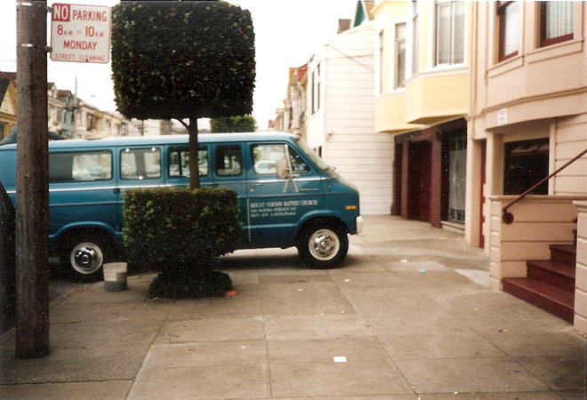
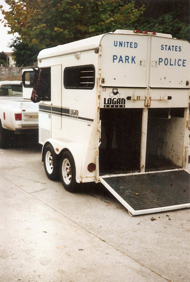

Back to San Francisco
Tom's flatmate was a delightfully ditzy girl called Eileen who came from Queens (or was it the Bronx?) in New York. Neurotic and permanently plagued by boyfriend problems ...

My last day was spent wandering around the area of their apartment where we saw typically odd San Francisco characters and situations.


